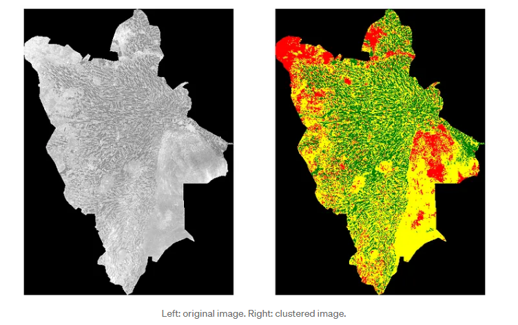

kmean-clustering#
Mengapa perlu clustering?#
Data sering kali tidak memiliki label → Unsupervised Learning ->
Clustering membantu mengelompokkan data berdasarkan kesamaan karakteristik
apa itu k-means clustering?#
Teknik pengelompokan (clustering) berbasis partisi -> Membagi data menjadi K kelompok berdasarkan jarak ->
Setiap kelompok direpresentasikan oleh centroid (rata-rata dari titik dalam kluster)
tujuan dan fungsi#
Meminimalkan variasi dalam kluster (within-cluster variance)
Mengelompokkan objek sehingga:
Objek dalam kluster sehomogen mungkin Objek antar kluster seheterogen mungkin
Langkah-langkah algoritma K-Means#
1.Tentukan jumlah kluster K
2.Pilih K centroid awal secara acak
3.Hitung jarak setiap data ke tiap centroid
4.Kelompokkan data berdasarkan centroid terdekat
5.Hitung ulang centroid dari rata-rata anggota kluster
6.Ulangi langkah 3–5 hingga konvergen (tidak ada perubahan signifikan)
kelebihan dan kekurangan#
kelebihan
cepat dan efisien
Mudah dipahami dan implementasikan
bekerja baik pada data besar
hasil stabil jika inisialisasi bagus
kekurangan
harus memnentukan nilai K Awal
sensitif pada outlier
dipengaruhi oleh skala dan dimensi data
hanya cocok unutk bentuk kluster sferis
segemntasi citra satelite#

Studi Kasus – Segmentasi Pelanggan#
Contoh: Data transaksi toko online#
Variabel: Umur, Frekuensi Belanja, Rata-Rata Pembelanjaan
Tujuan: Membuat segmentasi pelanggan untuk strategi pemasaran
Hasil: Kluster seperti “Pelanggan Setia”, “Pelanggan tidak setia”, dll.
Implementasi#
from sklearn.preprocessing import KBinsDiscretizer
import pandas as pd
# Baca data
data = pd.read_csv("combined_data.csv")
data = data.drop(columns=['sepal_width', 'petal_length', 'petal_width'])
# Diskretisasi
discretizer = KBinsDiscretizer(n_bins=4, encode='ordinal', strategy='uniform')
binned = discretizer.fit_transform(data[['sepal_length']])
# Masukkan ke dataframe baru
df_kategori = pd.DataFrame(binned, columns=['sepal_length_bin'])
# Lihat hasil
print(df_kategori.head())
sepal_length_bin
0 0.0
1 0.0
2 0.0
3 0.0
4 0.0
import pandas as pd
# Baca data
data = pd.read_csv("combined_data.csv")
data = data.drop(columns=['sepal_width', 'petal_length', 'petal_width'])
# Diskretisasi jadi 4 bin kategori: A, B, C, D
labels = ['A', 'B', 'C', 'D']
df_kategori = data.copy()
df_kategori['sepal_length'] = pd.cut(df_kategori['sepal_length'], bins=4, labels=labels)
# Lihat hasil
print(df_kategori.head())
id class sepal_length
0 1 Iris-setosa A
1 2 Iris-setosa A
2 3 Iris-setosa A
3 4 Iris-setosa A
4 5 Iris-setosa A
from sklearn.cluster import KMeans
import matplotlib.pyplot as plt
import pandas as pd
# Load data
df = pd.read_csv('combined_data.csv')
# Ambil fitur numerik untuk clustering
X = df[['petal_length', 'petal_width', 'sepal_length', 'sepal_width']].values
# Inisiasi dan latih model KMeans
kmeans = KMeans(n_clusters=3, random_state=42)
kmeans.fit(X)
# Visualisasi hasil clustering (gunakan dua fitur pertama agar bisa diplot 2D)
plt.figure(figsize=(8, 6))
plt.scatter(X[:, 0], X[:, 1], c=kmeans.labels_, cmap='viridis', s=50)
plt.scatter(kmeans.cluster_centers_[:, 0], kmeans.cluster_centers_[:, 1],
s=200, c='red', marker='X', label='Centroid')
plt.xlabel('Petal Length')
plt.ylabel('Petal Width')
plt.title('Hasil K-Means Clustering')
plt.legend()
plt.grid(True)
plt.show()
Evaluasi Hasil Klustering#
Inertia: Jumlah kuadrat jarak antara titik dan centroid
Silhouette Score: Ukuran seberapa mirip suatu objek dengan klusternya dibanding kluster lain
Elbow Method: Untuk memilih nilai K optimal
from sklearn.cluster import KMeans
from sklearn.metrics import silhouette_score
import matplotlib.pyplot as plt
import pandas as pd
# Load data
df = pd.read_csv('combined_data.csv')
X = df[['petal_length', 'petal_width', 'sepal_length', 'sepal_width']].values
# Elbow method dan Silhouette Score
inertias = []
sil_scores = []
K_range = range(2, 10)
for k in K_range:
kmeans = KMeans(n_clusters=k, random_state=42)
kmeans.fit(X)
inertias.append(kmeans.inertia_)
sil_scores.append(silhouette_score(X, kmeans.labels_))
# Plot Elbow Method
plt.figure(figsize=(14, 5))
plt.subplot(1, 2, 1)
plt.plot(K_range, inertias, 'bo-')
plt.xlabel('Jumlah Cluster (K)')
plt.ylabel('Inertia')
plt.title('Elbow Method')
# Plot Silhouette Score
plt.subplot(1, 2, 2)
plt.plot(K_range, sil_scores, 'go-')
plt.xlabel('Jumlah Cluster (K)')
plt.ylabel('Silhouette Score')
plt.title('Silhouette Score untuk Setiap K')
plt.tight_layout()
plt.show()
Inertia (Sum Square Error / SSE)#
Rumus Inertia:#
Dimana:#
\( x_i \): Titik data ke-i
\(mu_{c_i}\): Centroid dari cluster tempat \(x_i\) berada
Semakin kecil nilai inertia, maka:
Jarak antara titik data dengan pusat cluster (centroid) semakin kecil
Klaster yang terbentuk semakin padat, dan
Hasil clustering dianggap lebih baik
Catatan: Inertia akan selalu turun jika nilai K ditambah. Maka, untuk menentukan jumlah cluster yang optimal, perlu menggunakan metode seperti Elbow Method atau Silhouette Score.
Interpretasi Nilai Inertia#
Nilai Inertia |
Arti |
|---|---|
Sangat kecil (mendekati 0) |
Klaster sangat kompak dan semua titik dekat dengan centroidnya → sangat baik |
Kecil hingga sedang |
Klaster cukup baik dan dapat diterima dalam banyak kasus |
Besar |
Klaster tidak rapat, mungkin distribusi datanya tidak cocok dengan K-Means atau nilai K terlalu kecil |
Metode Elbow#
Menilai Inertia Secara Relatif#
Metode Elbow digunakan untuk menentukan jumlah klaster optimal (nilai k) dalam algoritma K-Means, dengan cara:
Menghitung nilai inertia untuk berbagai nilai
kMemplot
kterhadap inertiaMencari titik “tekukan” (elbow point), yaitu saat penurunan inertia mulai melambat
Ilustrasi:#
k |
Inertia |
|---|---|
1 |
10.0 |
2 |
3.0 ← elbow point |
3 |
1.5 |
4 |
0.8 |
Di sini, k = 2 memberikan penurunan besar pertama.
Tapi dari k=2 ke k=3, penurunan sudah tidak sebesar sebelumnya.
Maka, k = 2 adalah pilihan optimal meski inertia belum mencapai nol.
Tip untuk Nilai Inertia#
Faktor |
Panduan |
|---|---|
Skala data |
Pastikan data sudah dinormalisasi agar inertia bisa dibandingkan antar fitur |
Jumlah data |
Untuk dataset besar, inertia cenderung besar juga walaupun kluster bagus |
Visualisasi |
Gabungkan dengan plot klaster untuk memeriksa bentuk kluster |
Catatan Penting:
Nilai inertia tidak bisa dibandingkan antar dataset yang berbeda tanpa penyesuaian.
Normalisasi fitur sangat krusial, terutama saat fitur memiliki skala yang sangat berbeda.
Gunakan inertia bersama metode lain seperti Silhouette Score untuk evaluasi menyeluruh.
Silhouette Analysis#
Silhouette Analysis mengukur seberapa baik suatu titik data sesuai dengan klaster tempat ia dikelompokkan, dibandingkan dengan klaster lain.
Untuk setiap titik i, silhouette score s(i) dihitung sebagai:
Keterangan:
a(i): Rata-rata jarak titik i ke semua titik lain dalam klaster yang sama
b(i): Rata-rata jarak titik i ke semua titik dalam klaster terdekat (tetangga)
Resume#
K-Means adalah algoritma clustering yang powerful dan mudah diterapkan
Cocok untuk data numerik dengan pola distribusi sederhana
Namun, hasil sangat bergantung pada pemilihan K dan posisi centroid awal
Dapat dikombinasikan dengan metode lain seperti PCA untuk reduksi dimensi
Komputasi K-Menas DATA IRIS#
import numpy as np
import pandas as pd
import matplotlib.pyplot as plt
# === 1. Load data (contoh dari file iris atau buat sendiri) ===
data = pd.read_csv("combined_data.csv")
X = data[['sepal_length', 'sepal_width', 'petal_length', 'petal_width']].values
# === 2. Standarisasi (optional, tapi disarankan) ===
from sklearn.preprocessing import StandardScaler
scaler = StandardScaler()
X_scaled = scaler.fit_transform(X)
# === 3. Tentukan K dan inisialisasi centroid secara acak ===
K = 3
np.random.seed(42)
initial_indices = np.random.choice(len(X_scaled), K, replace=False)
centroids = X_scaled[initial_indices]
def euclidean_distance(a, b):
return np.sqrt(np.sum((a - b) ** 2))
# === 4. Iterasi K-Means manual ===
max_iter = 100
for iteration in range(max_iter):
# a. Hitung jarak setiap titik ke tiap centroid
distances = np.array([[euclidean_distance(x, c) for c in centroids] for x in X_scaled])
# b. Assign kluster berdasarkan jarak minimum
cluster_labels = np.argmin(distances, axis=1)
# c. Hitung centroid baru
new_centroids = np.array([X_scaled[cluster_labels == k].mean(axis=0) for k in range(K)])
# d. Cek konvergensi (jika centroid tidak berubah signifikan)
if np.allclose(centroids, new_centroids):
print(f"Konvergen pada iterasi ke-{iteration+1}")
break
centroids = new_centroids
# === 5. Tampilkan hasil klustering ===
cluster_spesies = {
0: 'versicolor',
1: 'setosa',
2: 'virginica'
}
data['cluster'] = cluster_labels
print(data[['sepal_length', 'sepal_width', 'petal_length', 'petal_width', 'cluster']].head())
# (Opsional) === 6. Visualisasi 2D (pakai 2 fitur) ===
plt.figure(figsize=(8, 6))
for k in range(K):
cluster_points = X_scaled[cluster_labels == k]
label = cluster_spesies [k]
plt.scatter(cluster_points[:, 0], cluster_points[:, 1], label= label)
plt.scatter(centroids[:, 0], centroids[:, 1], color='black', marker='X', s=200, label='Centroids')
plt.xlabel('Sepal Length')
plt.ylabel('Sepal Width')
plt.legend()
plt.title("Manual K-Means Clustering (2D Projection)")
plt.grid(True)
plt.show()
print(data['cluster'].value_counts())
Konvergen pada iterasi ke-3
sepal_length sepal_width petal_length petal_width cluster
0 4.4 3.2 1.4 0.2 1
1 4.9 3.0 1.4 0.2 1
2 4.7 3.2 1.3 0.2 1
3 4.6 3.1 1.5 0.2 1
4 5.0 3.6 1.4 0.2 1
cluster
0 70
1 50
2 30
Name: count, dtype: int64
from sklearn.cluster import KMeans
from sklearn.preprocessing import StandardScaler
from sklearn.metrics import silhouette_score
import matplotlib.pyplot as plt
# Ambil fitur
features = df[['sepal_length', 'sepal_width', 'petal_length', 'petal_width']]
# Standarisasi
scaler = StandardScaler()
scaled_features = scaler.fit_transform(features)
# Tentukan jumlah klaster
K = 2
kmeans = KMeans(n_clusters=K, random_state=42, n_init=10)
# Fit model
kmeans.fit(scaled_features)
# Tambahkan hasil kluster ke DataFrame
df['cluster'] = kmeans.labels_
# Tampilkan hasil
print("Jumlah iterasi:", kmeans.n_iter_)
print(df.head())
# Hitung inertia
print("Inertia (total within-cluster sum of squares):", kmeans.inertia_)
# Hitung silhouette score
sil_score = silhouette_score(scaled_features, kmeans.labels_)
print("Silhouette Score:", sil_score)
# Visualisasi menggunakan dua fitur pertama (misalnya: sepal_length dan sepal_width)
plt.figure(figsize=(8, 6))
for cluster_id in range(K):
cluster_points = scaled_features[df['cluster'] == cluster_id]
plt.scatter(cluster_points[:, 0], cluster_points[:, 1], label=f'Cluster {cluster_id}')
# Centroid (dalam bentuk yang sudah diskalakan)
plt.scatter(kmeans.cluster_centers_[:, 0], kmeans.cluster_centers_[:, 1],
s=200, c='black', marker='X', label='Centroids')
plt.xlabel('Sepal Length')
plt.ylabel('Sepal Width')
plt.title(f'KMeans Clustering with K={K}')
plt.legend()
plt.grid(True)
plt.tight_layout()
plt.show()
print(data['cluster'].value_counts())
Jumlah iterasi: 2
id class petal_length petal_width sepal_length sepal_width \
0 1 Iris-setosa 1.4 0.2 4.4 3.2
1 2 Iris-setosa 1.4 0.2 4.9 3.0
2 3 Iris-setosa 1.3 0.2 4.7 3.2
3 4 Iris-setosa 1.5 0.2 4.6 3.1
4 5 Iris-setosa 1.4 0.2 5.0 3.6
cluster
0 0
1 0
2 0
3 0
4 0
Inertia (total within-cluster sum of squares): 306.1218181389713
Silhouette Score: 0.8966755007290355
cluster
0 70
1 50
2 30
Name: count, dtype: int64
from sklearn.cluster import KMeans
from sklearn.preprocessing import StandardScaler
from sklearn.metrics import silhouette_score
import matplotlib.pyplot as plt
# Ambil fitur
features = df[['sepal_length', 'sepal_width', 'petal_length', 'petal_width']]
# Standarisasi
scaler = StandardScaler()
scaled_features = scaler.fit_transform(features)
# Tentukan jumlah klaster
K = 3
kmeans = KMeans(n_clusters=K, random_state=42, n_init=10)
# Fit model
kmeans.fit(scaled_features)
# Tambahkan hasil kluster ke DataFrame
df['cluster'] = kmeans.labels_
# Tampilkan hasil
print("Jumlah iterasi:", kmeans.n_iter_)
print(df.head())
# Hitung inertia
print("Inertia (total within-cluster sum of squares):", kmeans.inertia_)
# Hitung silhouette score
sil_score = silhouette_score(scaled_features, kmeans.labels_)
print("Silhouette Score:", sil_score)
# Visualisasi menggunakan dua fitur pertama (misalnya: sepal_length dan sepal_width)
plt.figure(figsize=(8, 6))
for cluster_id in range(K):
cluster_points = scaled_features[df['cluster'] == cluster_id]
plt.scatter(cluster_points[:, 0], cluster_points[:, 1], label=f'Cluster {cluster_id}')
# Centroid (dalam bentuk yang sudah diskalakan)
plt.scatter(kmeans.cluster_centers_[:, 0], kmeans.cluster_centers_[:, 1],
s=200, c='black', marker='X', label='Centroids')
plt.xlabel('Sepal Length')
plt.ylabel('Sepal Width')
plt.title(f'KMeans Clustering with K={K}')
plt.legend()
plt.grid(True)
plt.tight_layout()
plt.show()
print(data['cluster'].value_counts())
Jumlah iterasi: 2
id class petal_length petal_width sepal_length sepal_width \
0 1 Iris-setosa 1.4 0.2 4.4 3.2
1 2 Iris-setosa 1.4 0.2 4.9 3.0
2 3 Iris-setosa 1.3 0.2 4.7 3.2
3 4 Iris-setosa 1.5 0.2 4.6 3.1
4 5 Iris-setosa 1.4 0.2 5.0 3.6
cluster
0 2
1 2
2 2
3 2
4 2
Inertia (total within-cluster sum of squares): 58.640968723437425
Silhouette Score: 0.7173730722977291
cluster
0 70
1 50
2 30
Name: count, dtype: int64
print("\nJumlah data per cluster:")
print(df['cluster'].value_counts().sort_index())
Jumlah data per cluster:
cluster
0 99
1 1
2 50
Name: count, dtype: int64
from sklearn.cluster import KMeans
from sklearn.preprocessing import StandardScaler
from sklearn.metrics import silhouette_score
import matplotlib.pyplot as plt
# Ambil fitur
features = df[['sepal_length', 'sepal_width', 'petal_length', 'petal_width']]
# Standarisasi
scaler = StandardScaler()
scaled_features = scaler.fit_transform(features)
# Tentukan jumlah klaster
K = 4
kmeans = KMeans(n_clusters=K, random_state=42, n_init=10)
# Fit model
kmeans.fit(scaled_features)
# Tambahkan hasil kluster ke DataFrame
df['cluster'] = kmeans.labels_
# Tampilkan hasil
print("Jumlah iterasi:", kmeans.n_iter_)
print(df.head())
# Hitung inertia
print("Inertia (total within-cluster sum of squares):", kmeans.inertia_)
# Hitung silhouette score
sil_score = silhouette_score(scaled_features, kmeans.labels_)
print("Silhouette Score:", sil_score)
# Visualisasi menggunakan dua fitur pertama (misalnya: sepal_length dan sepal_width)
plt.figure(figsize=(8, 6))
for cluster_id in range(K):
cluster_points = scaled_features[df['cluster'] == cluster_id]
plt.scatter(cluster_points[:, 0], cluster_points[:, 1], label=f'Cluster {cluster_id}')
# Centroid (dalam bentuk yang sudah diskalakan)
plt.scatter(kmeans.cluster_centers_[:, 0], kmeans.cluster_centers_[:, 1],
s=200, c='black', marker='X', label='Centroids')
plt.xlabel('Sepal Length')
plt.ylabel('Sepal Width')
plt.title(f'KMeans Clustering with K={K}')
plt.legend()
plt.grid(True)
plt.tight_layout()
plt.show()
Jumlah iterasi: 4
id class petal_length petal_width sepal_length sepal_width \
0 1 Iris-setosa 1.4 0.2 4.4 3.2
1 2 Iris-setosa 1.4 0.2 4.9 3.0
2 3 Iris-setosa 1.3 0.2 4.7 3.2
3 4 Iris-setosa 1.5 0.2 4.6 3.1
4 5 Iris-setosa 1.4 0.2 5.0 3.6
cluster
0 2
1 2
2 2
3 2
4 2
Inertia (total within-cluster sum of squares): 22.682810166974768
Silhouette Score: 0.6264768719409733
import numpy as np
import pandas as pd
import matplotlib.pyplot as plt
from sklearn.cluster import KMeans
from sklearn.preprocessing import MinMaxScaler
# === 1. Load data ===
iris = pd.read_csv('combined_data.csv')
# Pastikan kolom benar dan tanpa missing value
print(iris.columns)
print(iris.isnull().sum())
# Ambil hanya kolom numerik yang diperlukan
iris_x = iris[['sepal_length', 'sepal_width', 'petal_length', 'petal_width']]
# Hapus/isi NaN jika ada
iris_x = iris_x.dropna()
# === 2. Scaling dengan MinMax ===
x_iris = np.array(iris_x)
scaler = MinMaxScaler()
x_scaled = scaler.fit_transform(x_iris)
# === 3. Hitung WCSS untuk berbagai nilai k ===
wcss = []
for i in range(1, 11):
km = KMeans(n_clusters=i, random_state=42)
km.fit(x_scaled)
wcss.append(km.inertia_)
# === 4. Visualisasi Elbow Method ===
plt.figure(figsize=(10, 6))
plt.plot(range(1, 11), wcss, linewidth=2, color="red", marker="8")
plt.axvline(x=3, ls='--', color='blue', label='Elbow at k=3')
plt.ylabel('WCSS')
plt.xlabel('Number of Clusters (k)')
plt.title('The Elbow Method for Optimal k', fontsize=16)
plt.legend()
plt.grid(True)
plt.show()
Index(['id', 'class', 'petal_length', 'petal_width', 'sepal_length',
'sepal_width'],
dtype='object')
id 0
class 0
petal_length 0
petal_width 0
sepal_length 0
sepal_width 0
dtype: int64